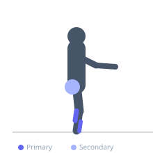
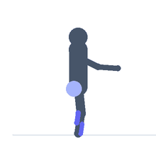

Exercise guide / Wobble Board Balance
Wobble Board Balance
Standing balance on a wobble board (a circular board mounted on a rounded base) challenges multi-directional ankle and hip proprioception. Unlike a foam pad (which provides soft, predictable instability), a wobble board creates dynamic tilting in all planes simultaneously, making it a higher-level proprioceptive challenge. Used in ankle sprain rehabilitation (late-stage), ACL protocols, and sport-specific balance training.
Primary muscles
soleus
tibialis anterior
Secondary muscles
gluteus medius
gastrocnemius medial
Stabilizers
transverse abdominis
Equipment
No Equipment (Bodyweight)


Starting position
- Step onto the wobble board with both feet centered on the platform. Find your balance with the board flat (edge not touching the ground). Stand near a wall for safety.
Setup
- Use a commercially available wobble board. Begin with bilateral (both feet) balance before attempting single-leg. Stand near a stable surface for safety.
Steps
- Step 1: Step onto the wobble board center. Find a balanced position with the board flat.
- Step 2: Allow the board to wobble naturally in all directions, responding with ankle and hip micro-adjustments to prevent the edge from contacting the floor.
- Step 3: Maintain balance for the prescribed duration.
- Step 4: Step off carefully. Rest and repeat.
Coaching cues
- Soft knees — do not lock out the knees
- Allow the board to respond to your weight shifts — do not fight it; dance with it
- Keep the gaze on a fixed point — visual focus aids balance
Breathing
- Breathe normally throughout. Focus and calm breathing aids balance.
Range of motion
- Bilateral balance target: board edge should not touch the floor. Single-leg progression: same target on one foot.
Tempo
- Hold for 30-60 seconds per set. Build to 60 seconds bilateral before progressing to single-leg.
Common mistakes
- Gripping with the toes — allow the ankle to respond to the board naturally
- Locking the knees — a small knee bend improves balance and reduces joint stress
- Standing too close to the edge of the board rather than centered
Safety
- ALWAYS stand near a wall or stable surface
- Use the wall or bar for safety when first learning the wobble board — do not attempt hands-free too quickly
- Wet or slippery wobble boards are hazardous — ensure the surface is dry
Training
- endurance: 1–3 reps
- endurance: 2–4 sets
- Rest: {'endurance': 30}